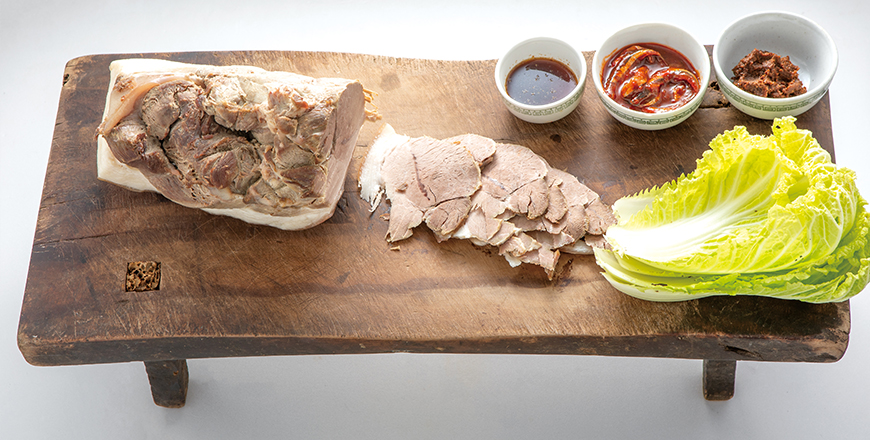
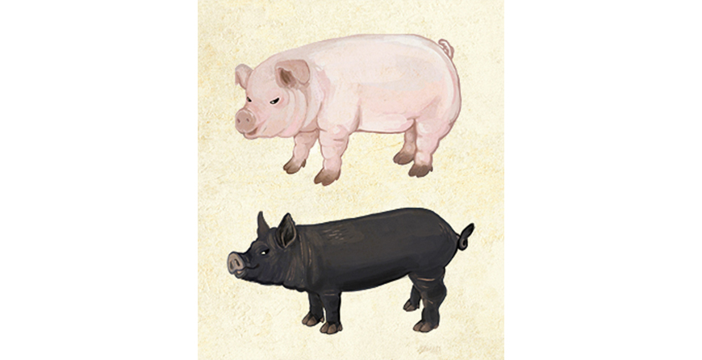

기획취재콘텐츠
- Home
- 제주라이프
- 기획취재콘텐츠
Jeju pork is famously delicious for a good reason. Jeju’s Pork Industry Part 1새로운 글

The glossy dark black, small ears and cute upward appearance, and the short, elastic legs are quite different from the pig's usual appearance. It's not just about appearance. It's thick and vivid, has a good chewing taste, and it captivates many people's tastes with its savory taste. Jeju black pork is the representative food that comes to mind when you think of Jeju.
For Jeju residents, pork is more than a food ingredient. In the past, each household in Jeju had a dottongsi, a place for raising the island’s black pigs. The pigs raised in a dottongsi took care of human excrements and food wastes, produced fertilizers, and protected their masters from snakes. The local black pigs served as ample sources of protein for the ancient residents of Jeju.

- Dombegogi is a dish consisting of slices of steam-cooked pork placed on a dombe (cutting board).
This dish used is a staple for every banquet in Jeju. ⓒJejusanghoe -
This dish used is a staple for every banquet in Jeju. ⓒJejusanghoe -
Today, pork dishes still represent Jeju’s culinary culture to outsiders. Jeju black pork is widely loved by travelers looking for a good culinary experience. In fact, it topped the list of Jeju’s traditional dishes that tourists keep coming back for. Moreover, Jeju pork steadfastly maintains its standing as the no. 1 premium ingredient that represents Korea, as well as the island itself.
Industrialization of Jeju Pork
Jeju’s pork industry has become one of the main pillars supporting Jeju’s economy. How can one begin to explain the island’s transition from backyard pig-raising practices to a primary industry that can support the island’s economy?
The answer can be found in St. Isidore Ranch. Father Patrick James McGlinchey came to Korea from Ireland in 1954. After witnessing the island’s God-given nature and the communities and culinary culture around pork, the priest considered the possibility of launching Jeju’s pork industry. In the early 1960s, Father McGlinchey brought 2,000 piglets from Seoul. In the following years, he laid the foundation for Jeju’s pork industry by founding Isidore Foundation, which engages in local pig ranch development projects, distributing breeding pigs for high-quality pork, training farmers to breed high-quality pigs, and building a cooperative tasked with the systemic distribution of Jeju pork.

- Illustration: Lee So-hyun -
Today, around 500,000 pigs are grown in Jeju. A total of 25% of the pigs (around 140,000) are black pigs. White pig breeds grown in Jeju are LYD pigs, a breed introduced on the island after the industrialization of pig farming. The breed is a combination of three breeds: Danish Landrace pigs, famous for their chewy texture; Yorkshire pigs, characterized by their large size and superb breeding capabilities; and Durok pigs, famous for their rich taste.
Jeju’s original black pig was designated as a natural monument in 2015. The Jeju Livestock Promotion Agency (LPA) grows and preserves the breed. The black pork currently sold in the market is from commercialized black pigs cross-bred with improved breeds at pig ranches. Jeju pig ranches develop and grow various cross-breeds of Jeju Black pigs, Hampshire pigs, Berkshire pigs, Durok pigs, and other species.
Since its construction of a 30,000 m2 breeding pig range in 1997, the LPA has been distributing high-quality breeding pigs to pig ranches in Jeju, encouraging them to produce higher quality pork.


※ Data courtesy of Livestock Division, Bureau of Agriculture, Livestock and Food, Jeju Special Self-Governing Provnice Government
Thus, thanks to the systemic efforts to foster the pork industry and develop pig breeds, Jeju’s pork industry became one of the main drivers of the island’s economy in just 50 years, along with the tangerine and tourism industries. As of 2018, a total of 534,113 pigs were being raised in Jeju. The figure represents a 12-fold increase from 48,794 in the 1960s. Since 2010, a total of 800,000 pigs have been slaughtered each year. The total revenue of the pork industry grew from KRW 81.3 billion in 1996 to more than KRW 400 billion in 2010. Furthermore, the figure accounts for 45% of the total revenue of the entire livestock industry (KRW 900 billion).
Around 30% of the pork produced in Jeju is consumed on the island, and the other 70% is sold to areas outside Jeju. Jeju has been expanding Jeju pork buyers outside Korea.
Export Volume and Value By Country (2010 ~ 2019)
| Country | Export volume(kg) | Export value (USD) |
|---|---|---|
| Thailand | 6,119,214 | 5,239,079 |
| Arab Emirate | 5,784 | 72,373 |
| Japan | 47,738 | 168,644 |
| Hong Kong | 30,365 | 478,155 |
| Philippines | 24,000 | 21,860 |
| Vietnam | 1,941,200 | 1,480,360 |

※ Data courtesy of Livestock Division, Bureau of Agriculture, Livestock and Food, Jeju Special Self-Governing Provnice Government
The main export items are pork by-products and processed pork products such as beef jerky, ham, and pork cutlet. The main exporters were Thailand, Vietnam, Hong Kong, and Japan, with about 8,000 tons of pork by-products and processed goods exported from 2010 to 2019. Over the past decade, exports related to money reached $7.46 million. Since 2017, pork as well as by-products have been exported. In particular, it exported Jeju pork to Dubai, the Middle East market, for the first time in 2018. This is a remarkable achievement considering that there is little consumption of pork in the local domestic market.
The growth of the pork industry has had a considerable effect on Jeju’s economy, both directly and indirectly. Furthermore, the island’s environment is conducive to supply high-quality pork, thereby contributing to the growth of pork restaurant businesses in Jeju.